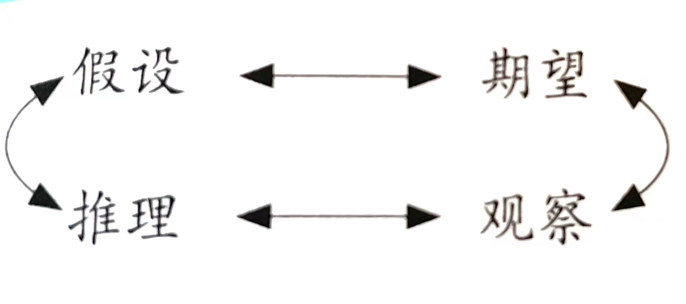
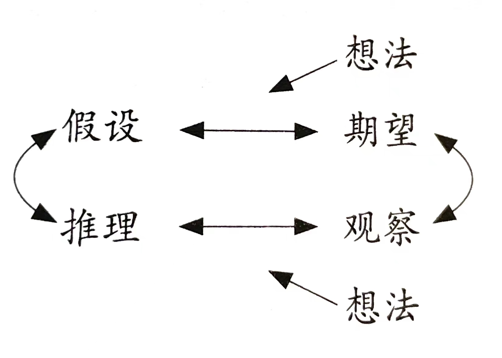

推荐序
i 但随着全球科技创新风起云涌，国际科技竞争愈演愈烈，需要承认的是，我国科技创新水平与世界先进水平还有较大差距，表现在从0到1的原始创新动力不足，核心技术受制于人，诸如芯片、高端光刻机、传感器、高端数控机床、重大疾病原研药等一批高科技产品长期被"卡脖子"，极大地威胁着我国产业链与供应链的安全。
ii 科学进步往往遵循严谨的范式，但有时会过于刻板。科学研究活动本身具有高度复杂性和不确定性，不同学科领域需要不同的研究方法，不同科学家运用的方法往往也不尽相同，因此，科学界很多人认为难以找到这些普遍适用的科学研究方法。然而，哲学的思维方式有时则充满了感性与新奇，这反而可以为严谨的科学研究方法提供全新的解决方案。不同学科的科学研究方法在基本原理和思维技巧方面具有共性，创造性思维往往建立在这样的共性之上——陷入，这种思维方式来源于哲学。
. 科学思维其实也是分层次的，自觉思维、常规思维和创造性思维是由其低到高的三个层次。所谓自觉思维，就是在科学活动中对某个问题有所意识，从而对自己的大脑造成刺激并对问题进行表层思考，一个想象的办法可能会在大脑中浮现；随后，常规思维开始发挥作用，我们需要超越自觉的思考和行为，为想象的方法连接好中间步骤并加以拓展，同时多渠道地进行求证，决定取舍并努力得到可行性方案；创造性思维，则往往需要我们放弃常规思维，放飞自己的想象力，有时甚至是梦想或者幻想，德国化学家凯库勒就是在梦中想到了苯环的结构。
iii 原创性思维模式的训练越早开始越好，特别是对中小学生、大学生乃至研究生的训练，应该改变以往千篇一律的填鸭式教学法，开展开放式、互动式教学，把培养学生的原创性思维能力以及学术研究上的批判精神摆在突出位置。
译者序
iv 创新产生的第一步，并且也是最重要的一步，就是要承认人类思维的局限性。既定的认知框架甚至无法解决或解释一些司空见惯的科学问题，它将我们的思维框定在"黑匣子"之中，形成可怕的思维定式（认知偏见），使得创造力受到限制，甚至致使人类文明停滞不前。
v "泥潭之猪"（PIG In MuD）——这个拥有特别名字的"创新工具箱"将引导你逐步找到打开创新之门的钥匙。而你需要做的，仅仅只是按照书中指导一步步地训练自己创新思维的能力。第一步，在兴趣、观察和知识的基础上，提出正确的问题并将它表述（Phase，P）出来；第二步，识别（Identify，I）认知框架，并且找到可替代的认知框架；第三步，产生（Generation，G）所有可能的解决方案；第四步，需要借助冥想，进行孵化（Incubate，I）；第五步，将你的最佳创意融合（Meld，M）到常规科学的过程中；第六步，传播（Disseminate，D）你的创新发现。
第一章 勿读此书
3 创新，其定义是有目的的创造力，被广泛地认为是科学进步的动力。创新构筑了人类福祉和繁荣的基石。
4 美国国家科学院的两个蓝丝带委员会在2007年和2010年披露了这样一个事实：美国科研单位在科学创新和竞争力关键要素，即知识资本、人力资本和创造性生态系统方面的资金投入，均出现严重不足。
第一部分 纵观全局：理解并克服创新的障碍
第2章 一切取决于你怎么看
11 创新性思维是不同寻常的，它混乱而古怪，游离在认知框架之外，且无迹可寻。相对而言，习惯性思维规整且清晰，让你以一种高效且可预见的方式感知世界。常规思维则需要运用被检验过的可靠预期结果来处理新信息并作出推论。语言学家将这些预期或假设称为认知框架。 事实证明，认知框架比你想象的要强大得多。
12 花上一天时间去仔细想想，回忆你所有的预期和假设。就算你的认知框架仅仅只有一小部分被打破了，那也会令你非常不安。
科学同样有认知框架，有一系列紧密相连的预期，会被成为"范式。譬如细菌理论（传染病是由病毒或细菌引发的），进化论（有利于生存的基因突变会被自然选择出来）和科学方法（收集数据形成理论）都是范式。
. 已经建立起来的基本原则是的科学家们能轻松地解释那些严谨的、可复制的实验，从而更高效地探寻整个世界的运行之道。
科学进步不仅建立了科学界的预期，同时也建立了相应的公众预期。
14 就像听到"自己去厨房拿"一样，当认知框架被打破时，你会感受到困惑、窘迫甚至是生气。当你的飞机毫无预期地在阿富汗下降时，你会感到恐慌。面对认知框架被打破，人们的反应是迅速的、本能的。
. 根据荷兰发明家汉斯·蒙德曼（Hans Monderman）"规则的数量越多，个人的责任感就会越少"的理论，一项大规模的实验在德拉赫滕（Drachten）的市中心进行。
15 开车变成了一项需要强大心理承受力的活动。这样反而使得交通更加通常，路上更加安全。效果令人瞩目，是不是？尽管从市中心街道上拆出交通标识和交通信号灯有各种各样符合逻辑的理由，但是你刚才的第一反应是对此事持否定态度。
关键问题在于，认知框架并不是完全符合逻辑的。它们是逻辑和情感的混合体。认知框架能同时影响理性和感性，因而会极大地影响我们对世界的感知和反应。然而，无论在日常生活还是在科学研究中，人们对打破认识框架或范式的通常反应都是拒绝。
认知框架的最后一个也是最不利于创新的一个特点，就是认知框架具有约束性。这种约束有助于提高惯性思维的效率和预见性。大量的感观输入和复杂的社交互动都是通过快速且有效的认知框架来处理的，你可以凭借认知框架快速地判断处境并作出反应。
. 有了认知框架，你不会对能想到的所有可能进行逐个判断，而是直接就跳到某个单一解释上。认知框架限制了新奇想法的产生，也带来了相应的后果。
16 古道尔并没有被这些反对的声音所阻吓，她返回贡贝国家公园继续观察研究。直到1986年，她把研究成果携程了一本厚重的著作——《贡贝国家公园黑猩猩的行为模式》（The Chimpanzees of Gombe: Pattern of Behavior）。在这本书里，她解释了一些爆炸性的研究结果。黑猩猩通过一些非常复杂的习俗来社交，这些习俗只能被定义为"文化"，而且可以代代传承。他们会嗜食同类，雄性之间为求偶而争斗，年幼黑猩猩有时也会为了报复而引发种群内突袭；同时黑猩猩会悲伤，会保护其他家庭成员。所有这些行为模式都模糊了人类和灵长类动物的界限。
第3章 战胜认知框架
19 常规的科学实验都根植于必要的假设和预期。但是伟大的进步往往需要颠覆那些搭建了科学世界稳定基石的经典理论。阿尔伯特·爱因斯坦对这一点有很深的感悟："在引起问题的认知框架内思考，永远无法解决问题。"
24 不过下面这些标准步骤有助于我们发现那些隐藏的概念。
第一步，提高对当前认知框架的认识。
第二步，考虑当前认知框架的结果。
第三步，设计一个新的认知框架。
第四步，考虑新认知框架的结果，包括李何必两个方面。
26 重构认知框架包括确定当前认知框架及其结果。假如这些解雇偶都是正向且有益的，那么就没有必要去重构它了。但是，假如结果有好有坏，那么你就需要脚踏实地地提出一个新的认知框架。不必苛求这个新认知框架一定正确，甚至都不必要求它有什么用处，它仅仅是让你能从不同的角度去思考问题。
第4章 想怎么说就怎么说
30 隐喻是你的认知框架在语言中传递的要素。隐喻将一个通常比较抽象的事物比作另一个比较具体的事物。比如"越大（具体）越好（抽象）"就是一个隐喻。隐喻是非常有力的记忆图像，能反映和塑造你的想法。作为认知框架的一种表达方式，隐喻会影响你的思维方式。我们一直在讨论如何产生惯性思维之外创新想法。如果用一个很有名的隐喻来描述，这就是所谓的"跳出盒子来思考"。
. 结构隐喻（structural metaphor）是将抽象事物描述得更具体的一类隐喻。 例如，"时间就是金钱。"它所传递的信息是时间是一种有限的资源和珍贵的商品。这意味着无目的的消耗时间就是浪费时间。和任何认知框架一样，"时间就是金钱"也有其特定的语境，并非所有社会都认可时间是一种产品。
31 本体隐喻（ontological metaphor）将经历描绘为物体或物质。这使得经历更容易被量化与分类。"我有堆积如山的工作要做"表示工作非常多，因为我们将山与又高又大联系起来。"我能感受到我们之间的磁力"则将爱情描绘成物理学中的一种作用力。
32 隐喻和认知框架有相似的特征。首先，就像你刚刚读到的，它们无处不在。其次，隐喻充满着情感。
. 再者，隐喻是根深蒂固的。像认知框架一样，隐喻会限制你的思维模式。
33 围绕认知框架或隐喻形成的记忆块可以解释两件事：婴儿为什么不记事，以及为什么人越老越觉得一年比一年快。
. 婴儿看到不同的事情后还不能将他们组合成可存储的、相关联的整套概念。"这就像是让婴儿通过一个随机摇动的锁孔来看这个世界，在每一个他们都只能理解在他们眼前发生的情景。如果只有一个锁孔，他们完全无法弄明白整个'房间'（即世界）的组织结构"。霍夫施塔特如是说。他用同样的理论来解释为什么随着年龄的增长，生命好像在加速流逝：因为随着人的年龄增长，他们把信息存储成更大的记忆包、更少的记忆块。因此每过一年，经历就显得更稀少。当然，如果认知框架或隐喻是记忆的文件夹，那么毫无疑问，这些文件夹的表现形式和组织方式会限制你的思维模式。
第6章 查明问题
43 当你第一次体验某种视觉、声音、口味和感觉的时候，一定会感到非常的美妙和不可思议。想象一下品尝到第一口布朗尼蛋糕、双脚第一次踩在湿草地上、听到低沉的双簧管发出的第一声奏鸣以及看着你的爱人穿着晚礼服从楼梯上缓缓下来，这些都是多么美妙的事啊。但是当这些经历在你的生活中重复上演时，它们就变得稀松平常了。
44 认知框架会引导你去看、听、闻，触和尝。你会选择性地关注那些你的认知框架认为重要的东西。那么，可以想象这将意味着什么——这意味着你会错过你的认知框架以外的一些细节。你的认知框架决定你观察什么，而观察到的东西又会使你进一步确信你的认知框架是正确的。这是多么自圆其说的预言啊！如果这样的话，你如何能看到那些会导致新认知框架的细节呢？只看到自己预期的事物，这会有多危险呢？
47 科学是以实验为依据的：观察是科学推理和进步的基础，观察产生假设，而新的假设引导范式的转变。因此，在科学上，仔细观察、小心求证是取得进步的根本。想获得诺贝尔奖吗？那就做好认真观察的准备吧！
49 真正的观察需要改变视觉倾向和突破认知框架，它几乎总是需要我们更加留心一些反常的事情。
第7章 做一个更敏锐的观察者
51
思考比了解更有趣，观察比思考更有趣。
——歌德（Goethe）
少观察多推理易出错，多观察少推理出真知。
——亚力克西·卡雷尔（Alexis Carrel）
52 要成为一个敏锐的观察者，下面三个办法非常有帮助：学习艺术；成为一名人类学家，即要走出去观察生活；关注那些看起来似乎不太对劲的事情，换句话说，即那些困扰你的事情。
作为有史以来最伟大的表象艺术家之一，莱昂纳多·达·芬奇（Leonardo da Vinci）曾说过："仅存在与脑海中而没有被感知验证的东西是无用的，产生不了任何真理。"
53 贝蒂·爱德华兹（Betty Edwards）在她1999年出版的《用右脑绘画》（Drawing on the Right Side of Brain）一书中建议，绘画时要从上到下地画出相邻的线条和形状，而不是先画出轮廓在填充内部结构。最重要的是，要画你实际看到的东西，而不是你所想象的。
56 IDEO设计公司阐述了产品创新的五个步骤：
- 理解市场、客户、技术和约束因素
- 到生活中去观察人和事
- 想象全新的概念以及将来会用到这些概念的客户，如果可能的话，利用计算机绘制效果图、进行模拟并设计原型
- 通过快速迭代来评价和优化原型
- 将新概念付诸实施
IDEO团队成员观察到了产品与客户之间的交互——特别是在使用产品的过程中。他们认为，不能指望别人告诉你想知道的事。通过观察和提问，你才会找到关键所在。顾客喜欢什么？讨厌什么呢？做什么对他们有效？做什么会让他们抓狂？为了更好地了解客户，任何问题都不会显得愚蠢和幼稚。
. IDEO设计公司的另外一个关键理念是：注意那些让你烦心的事情或情况，找到其中的问题，然后改善他们。
第8章 你的偏见程度？
61 这是因为，与感官输入一样，当需要做的决策过多时，人们根本无法同时处理这么多的信息，因此你在做决策时会选择捷径。这些捷径会帮助你对复杂情况做出快速判断，但有时也会将你引入歧途。事实上，人们的决策经常是非理性的，这被成为认知偏见。认知偏见被定义为系统性的心理错误，它会导致你对包括数字、社会接触和记忆在内的各种情境作出错误的评估。
那些扰乱你的决策并导致认知偏见的，正是你的认知框架。它可以使你在一种情况下做出一个选择，而在另一种情况下做出另一个选择。但当将这两个选择放在一起时，它们会变得不稳定，甚至是非理性的。产生了偏见的认知框架通常会引导你做出一些熟悉的而非新颖的决策。
62 想想这意味着什么，其实部分学生并不是真正想要印刷版，只是当免费赠品被加进其组合优惠中时，价格比较的对象就改变了，于是这部分学生选择了实际更昂贵的电子版和印刷版的组合。尽管印刷版不是他们真正想要的，但是他们愿意去支付更多。类似地，即便是一样的商品，我们也经常是花更多的钱在那些时髦、昂贵的商店里购买，而不是去那些廉价、不加修饰的店，这样做有多理性呢？
情境偏见（contextual bias）产生于环境比较的认知框架中。 也就是说，你会假设一个商品的价格是基于周围环境中其他商品的价格来定的。你坚持选择那些看似安全的东西（例如免费赠品，即使你并不需要），或者要依赖于熟悉商品进行比较。在评估价格、事件、社会状况以及医疗/科学决策时，你会泰然自若地处在自己的认知框架中，但它最终让你误入歧途。
情境偏见中与社会紧密相关的是倾向或者渴望去成为你的朋友和邻居们那样的人。
63 情境偏见会影响所有人的决策，包括科学家和医生。
. 也就是说，受过类似训练的医生和当地卫生界的诊疗风格决定了患者的治疗方式。听起来是不是很像情境偏见？是不是很像在一个熟悉的认知框架下做决策？事实确实如此。如果你认为在医学上有绝对的"对"和"错"，那么你应该想想，即使是专家所做出的对错判断也是相对于社会环境而言的。
从你选择哪种杂志订阅方式，到你有多大可能性被建议做手术，我们都可以看出，情境偏见会影响人们做决策。人们会看中并做出那些看似安全和熟悉的决策，那么，不去追求那些充满风险和未知的创新，也就不足为奇了。
64 锚定效应是情境偏见的一个子集，它会使你倾向于既定的认知框架，而远离那些创新的、不同寻常的认知框架。
人们很难抛开对事物的第一印象。这一印象可能来自你身边某人的做法（情境偏见），或是源于你看到的第一个标价（锚定效应），当然你也有可能就是不愿意改变印象。这类偏见称为固着偏误（perseverance bias）。
65 即便时候已经证实某些信息是完全虚构的，人们还是会坚持他们最初的想法。这时，固着偏误就产生了。
. 即使是医生和科学家，他们也很难接受新鲜事物，尽管他们因自己是"数据控"且身处"研究前沿"而引以为豪。
65 预期偏差（expectation bias）是指特定环境下你习惯看到的景象对你决策的影响。你的认知框架就是你的预期，当然是纯粹的期望。当认知框架引导你以一种使你误入歧途的方式过滤输入的信息时，预期偏差就发生了。
66 你的现实感是围绕着记忆构建的。事后人人都是诸葛亮。后视偏见就是一种信念，指的是相信自己家的记忆比实际情况更准确。 你最近的期望，改变了更遥远的现实。可以把这个看作是一个关于时间的认知框架：越是新近产生的认知框架就越有活力，对你心理的现实性影响就越强。
67 当某一观察结果和此刻的现象吻合时，人们就会认为自己曾经也看到了这一结果，只是没有记录下来而已。而事实上，他们之前根本没有观察到这一结果。因为准确无误的实验记录是做好科学研究的核心要素，所以这样的情况可能并不常见。但是，科学中的偏见确实存在，且往往与创新背道而驰。
. 人们总是会对那些与最近发生的时间和期望相一致的记忆赋予过度信任。你将想法建立在情境中，所以身边人容易影响你（情境偏见）、第一眼看到的标价容易影响你（锚定效应）、第一影响（固着偏误）或对现实的假设（预期偏差）也很容易影响你的思维。你基于获得的信息作出推论，但这些推论并不总是理性的。就像认知框架会限制你的思维一样，认知偏见会误导你的决定。你自认为已经经过深思熟虑所做出的理性决策，其实很容易被看似安全、熟悉的认知框架妨碍。即使我们没有任何保守倾向，认知偏见也会使我们的决策远离独创和新颖。
第9章 克服偏见
70 一旦你确定自己有偏见，那么：
第一步，确定所要做的决策及与之相关的信息。
第二步，识别造成偏见的认知框架。
第三步，去除认知框架或设计替代的认知框架。
第四步，考虑替代认知框架可能带来的结果。
第10章 大脑和创造力：灵感之位
75 "创造力之位"已经被广泛认为是位于人体大脑的右半球。
76 右脑：
- 理解复杂的、整体的模式
- 识别和欣赏音乐与视觉艺术
- 在快速眼动（Rapid Eye Movement, REM）睡眠时形成梦境
- 处理新情况
- 抽象思维，包括理解隐喻
77 左脑：
- 分析并进行线性处理
- 识别语言（语法和单词）
- 理解和处理数学概念
- 处理日常和经常出现的情况
79 但是这个问题本身可能也是错误的：可能根本就没有单独一个"位置"，创造力不是一个单纯的事物。
请记住在卡尔森的实验中，高创造力组的人使用的是左、右大脑。具有创造力的人的优势是能够充分利用广阔范围的认知潜能。任何单一半侧的大脑在解决复杂、困难的思维任务时都是相对较弱的。尽管简单的任务可以在一侧大脑中进行，但复杂的任务需要全部大脑的力量，左脑和右脑必须相互合作。如果没有左脑首先审查事实证据和方案，那么右脑就不能解读新信息。创新不只是右侧区域的模式识别，它还需要左脑的词语联想（语言问题）或定量分析（数学问题）的功能，以及左脑评判解决方案适用性的功能。
今天，研究创造力的科学家们提出的最主要的假说认为，独创的思想来源于思维整合，需要使用大脑的全部区域来产生替代性的认知框架。你必须解读单词，追溯记忆，解码隐喻的含义，设想推理，并想象新的隐喻模式。要摆脱认知偏见很可能需要接受所有这些训练，甚至更多。学会"跳出固定思维"相当于训练你自己的思维整合。
第11章 大脑和创造力：前位优势
85 我认为，大脑额叶对创造力的作用是矛盾的：既有帮助，又有阻碍。回想一下，认知框架定义和限制了你对新信息的解读方式，同时引起了强力的情绪。
86 在《科学革命的结构》（The Structure of Scientific Revolution）一书中，托马斯·库恩（Thomas Kuhn）认为认知框架的转变给其他科学家的普遍干感觉是介于古怪和威胁之间。库恩将"正常科学"描述为几乎所有的科学家在努力强化既存范式的活动。当面对一个具有竞争力的新范式时，科学家的第一反应就是反对它。
. 跳出认知框架的见解在最初被提出时，几乎都是被所有人拒绝的。
第二个问题是：做决策是创新中心的关键过程吗？创造性思维需要产生巧妙的想法，但它也意味着要决心去实现一个不被接受甚至可能无法接受的想法。如果没有那种无论结果怎样都义无反顾地进行实验的意愿，就不会有创新。顾名思义，创新者必须要坚定不移地追求一个想法。
第二部分 驱动创新：提出并回答科学问题
第12章 科学的乐趣
92 也就是说，要考虑在各种实验条件下发生的情况，不是在实验室实际开展实验，而是在脑海中进行想象实验。
. 当你不得不做一些你并不感兴趣的事情时，你就很难有创造力。
93 还有无数其他的事例可以体现费曼对于学习和钻研的热情。在巴西做访问教授的一年里，他上午授课，下午到海滩上在一支桑巴舞乐队里学打手鼓。在拉斯维加斯，他跟着职业赌徒练习如何赢得赌局。他还跟随一位哲学家学习绘画，并将画作卖给了加利福尼亚州帕萨迪纳市最好的百货商店。
94 从大量的研究中可以总结出，科学领域中许多伟大的天才都具有下列特征：
- 内在动力（自我引导、自我鞭策、充满活力）
- 能容忍不确定性、有好奇心、有开放性思维
- 自信，乐于冒险
- 乐于挑战权威
- 锲而不舍，能够接受延迟的满足感
- 在许多领域都有经验并且知识渊博
- 不介意失败
. 在过去的几十年里，以色列成为地球上最具创新力的国家之一。尽管常年面临着不稳定的政局和危险的战争，以色列这个国家仍然拥有世界上密度最高的高科技初创公司，平均每1844位以色列人就有一个高科技初创公司。以2008年为例，以色列的人均风险投资是美国的2.5倍、中国的80倍。
95 创新思维通常是好奇心和智力探索欲望的结合，它不是一份工作，而是一种激情。
. 他们享受着发现的喜悦，他们陶醉于新思想的奇妙。他们勇于冒险，因为这是乐趣的一部分。他们追求创新点纯粹乐趣。
第13章 要问正确的问题
98 提出正确的问题是促使你开发新想法的一系列步骤中的第一步。你可以通过有趣的首位字母记住这些步骤，即PIG In MuD（"泥潭之猪"）。
- Phrase a question based on interest, observation, and knowledge（在兴趣、观察和知识的基础上将问题表述出来）
- Identify the frames and find alternatives [识别认识框架并找到可替代的认知框架（如在第2章至第5章中所讨论的）]
- Generate all possible solutions（产生所有可能的解决方案）
- Incubate（孵化）
- Meld your single best idea back into the process of normal science (validate that your innovation works or is true)[将你的一个最佳创意融合到常规科学的过程中（证明你的创新有效或真实）]
- Disseminate your innovative finding（传播你的新发现）
99 进行创造的动力源自那些让你真正感到好奇或者最好是令你满怀激情的问题。你在寻找一个既让你好奇又能够加以解决且将会造福科学和社会的问题。
问题就像深入人心的戏剧中的人物角色。就像好的人物角色一样，好的问题天生就引人入胜。
. 你怎么知道到底会发生什么呢？考虑下面三个特点：
- 合理性：你感兴趣的领域不应该已经有了明确的方案。假如一个范例，理论或者观察没有明显异常或理由去作出改变，那么可能就不值得你花费时间
- 可行性：技术发展水平和社会组织方式使得解决方案有实现的可能。可行性不一定意味着"容易实现"。因为没有明确的市场，或者因为技术只是被部分地开发出来，解决方案可能不能马上实行。简单地说，可行就意味着你还得脚踏实地地干
- 实用性：希望你感兴趣的领域有科学或社会意义。对科学或经济发展有建设性影响的问题，尤其值得你投入
100 为什么凡尔纳被认为是科幻作家而不是科学发明家？受好奇心驱使并且提出了有用的问题，他的兴趣好像符合前面的准则。但是并不全是，凡尔纳的追求没有可行性，由此书里产生的想法还不能被他那个时代的任何科技所支撑。
. 如果你提出的问题在你有生之年能够得以解决，那么追求你的兴趣将会是最充实的。
要提出一个合理、可行和实用的问题，你必须知道先前的研究揭示了什么、科技发展到什么阶段以及社会的问题与需求是什么。这就需要你掌握各种事实。在实证（基于数据搜集）科学中，光凭一个人单打独斗很那促进创新。
. 经验和学习促使实证科学家的思想逐渐走向成熟。正如你开始训练更加敏锐的观察，你必须要通过自身不断积累并理解他人的观察结果中获得类似知识。
生活中很少有什么能比阅读更能拓展思维。
101 经常广泛地阅读可以让你接触到更多的问题和解决方案。如果你发现了感兴趣的话题，可以自由地深入研究，但是永远不要用深度替代广度。学习广泛的知识会让你思考新的问题、新的答案和新的可能性。
102 但是这些问题意味着超越一般性的兴趣研究领域了。它们已经像是成熟的戏剧中的人物角色一样——真正有了生命。你去"了解"每一个问题的方式是将"谁""什么事""什么时间""什么地点"和"为什么"融入其中。听起来像侦探工作？本来就该如此！ 当你去了解一个戏剧角色或者一个问题时，你就是在进行调查，每一个细节都是你好奇的对象。一旦你去描述这个人或这个问题时，他们就变得真实而有意义了。一般性的研究兴趣领域只会激发你提出问题，但是各种具体事实才能真正界定你提出的这个问题。
104 有时候，只要我们能够问出正确的问题，巧妙的答案就摆在我们面前。如果我们不是基于先入为主的偏见，而是基于观察和信息将问题的基本部分组合起来，那么我们就走上了创新之路。合理、可行和可用的问题能够转变为揭示对科学和人类社会都具有重大改变意义的洞见。按照"谁""什么事""什么时间"和"在哪里"提出的具体问题会产生有启发性的答案。如果提出的问题太过狭隘，或是走到另一个极端变得太过想当然或宽泛，那么，其答案最后可能会让我们一无所获。
第14章 婚姻与火柴盒的相似之处？
107 不妨想象一下，创新就像美国的西部开发。如果拓荒者和自耕农都沿着单一的路线行走，那么将很难发现密西西比河和西海岸之间肥沃的土地并加以开发。
. 假设众人都走同一条路径，前景将会大打折扣，但是，如果拓荒者走出了众多路径，我们就会拥有更充足的土地，面临更多的机遇。
. 类比以及你将在下一章中学到的一系列方法都是产生新创意的工具。它们是创新过程"泥潭之猪"PIG In MuD中的G（产生）这一步骤，即产生所有可能的解决方案。这个步骤的重点是扩大创新的空间。
108 类比不同于隐喻。隐喻是一种将两个事物同等起来的语言概念，而类比虽然对事物进行比较，却并不意味着他们是一样的。
类比从三个方面延伸了隐喻的概念。首先，在类比中，因为被比较的事物仅是相似（不是一样），所以它们也是明确不同的，更为重要的是，类比揭示出关系的本质。
109 其次，类比不局限于语言本身，它还与逻辑相关。至少我们知道，阿基米德并没有在他进入浴缸桶使得水溢出时就立马说"有了！我的身体之于皇冠，正如黄金之于体积"。虽然没有这样说，但是他知道的身体之所以让水溢出是由于他的身体有体积。
再次，隐喻是认知框架的语言表现，而类比则是一个适应性更强的工具，可以将认知框架放在新的语境中。事实上，找到新颖的类比关系有助于消除认知框架。
110 普利策奖得主道格拉斯·霍夫施塔特说过，隐喻和类比是人类认知的核心。隐喻定义了我们处理记忆的"块"，而类比帮助决定什么可以放在一"块"。
. 在选择合适的短语时，你在想"这是我上次出去喝酒时的说法，但不是我上次和董事会坐在一起时的说法"。
111 就像在水在障碍物上反弹一样，回声可能代表声音的反弹。17世纪人们又发现了光和声之间的相似的类比，因而产生了光波理论。后来，通过结合马克斯·普朗克（Max Planck）和阿尔伯特·爱因斯坦光是波和光是粒子这两个类比，创建了量子力学。
113 类比也可以是检验同一科学领域中各种现象之间相似和不同之处的有力工具，我们称之为"水平"集成，以区别在于刚才看到的"垂直"集成这样更加传统的示例。垂直集成是对单一现象的深入理解——例如说可以在视觉上通过簧片震动观察到声音的震动。水平集成则常常包括启示性的洞见，这些洞见往往来自这样的问题："这种疾病与那种疾病有何相似或不同之处？"
第15章 翻转！
117 就像类比一样，有很多工具可以对问题进行重新排列组合，从而拓展你的思维空间。希望这能让你跳出认知框架，并促进在所谓"泥潭之猪"（PIG In MuD）创新过程里产生更多可能性方案。重新排列组合扩大了可选择方案的数量和原创性。
有几种工具属于重新排列组合这个范畴。它们就像锤子和螺丝刀，锤子不太适用于拧螺丝，而螺丝刀也不是用来敲钉子的。你真正想要的是在工具箱里有足够多不同的工具，这样你就可以适应不同的情况，利用好所有的机会。
拓宽视角 118 拓宽视角是一种可以反映出思维扩展方法的创新工具。当寻找某一特定问题的解决方案时，常用的一种策略就是缩小视角，已获得更高的效率和更好的效果。但在这里你要做的正好相反。拓宽视角能够让你远离标准的认知框架，并使那些替代性的、未经尝试的、之前未考虑过的方法得到凸显。
缩小视角 120 大范围或复杂的问题经常需要通过分解来处理。因为分解后的元素可能会将大问题引向单个小的解决方案。我们希望的是触摸到的节点处于足够中心的位置，从而可以照亮整个系统。如果你怀疑修补一小块无法影响整体，那么不妨想象关于桥梁的道理：去掉一个支撑或一个钢梁，整座桥都会倒塌。
121 现实生活中，医生经常从一系列的迹象和症状飞跃到一个格式塔印象。不幸的是，后视偏见和情境偏见可能会造成错误，更为严格、基于证据的方法是采用贝叶斯式思考，过程是这样的：你首先考虑患者所患的是数种可能病因中的某一种，然后相应地寻找有关体征和症状，或者做进一步检查。每一条新信息都有增加或降低每个诊断的病因的概率。最终，各种可能性汇聚到一起就会肯定某一特定的诊断的病因，这就是你要去治疗的疾病。
反向思维 125 反向思维在直接解决问题时非常有用。我们通常会采用一套前瞻性的步骤来完成诸如按时上班这种任务（比如起床、刷牙、洗澡、吃早餐和开车）。然而，对于许多任务——特别是有多个决策点的认为来说，最好采用倒推法。
当打包旅行时，你会根据出去几天、预期的天气情况和行程中的活动安排进行准备。这不是从起点，而是从终点出发进行考虑。你的思考过程可能像这样："我会在沙滩上待上5天，但由于我会流很多汗，我最好带7件衬衫。"你所做的是预测结果，并在此基础上采取行动。所以你始于终点，一步一步倒推，直到推到起点——你整理手提箱。
重新排列组合 127 既然创新就要改变认知框架，那么把你通常不会放在一起的事物组合起来就是另外一种跳出认知框架的方法。
与重新组织和重新排列相对是功能固着（functional fixedness）。这一术语于20世纪40年代由心理学家卡尔·邓克尔（Karl Duncker）提出，指的是一旦我们学会使用某个特定物体时，我们的思维就会被固定在这特定的用法或者功能上。格式塔心理学这一学科也由此诞生。假如用本书的语言通俗地解释格式塔心理学，就是功能成为我们对那个物体的预期——即我们的认知框架。想要跳出固定的认知框架，就需要重组和重新排列各种元素。
. 重新排列可以包括移动各组成部分，但是也可能意味着调整次序、节奏或人员。
128 拓宽视角、缩小视角、反向思维、重新组织与重新排列都迫使你从不同角度看待问题，它们会使你跳出熟悉的决策框架和模式，让你自由地进入新的想法空间。
第16章 一名男子走进酒吧
132 科学同时寻找正确和错误答案，目的就是有效剔除错误从而可以识别正确答案。但并不是每个问题都只有单一解决方案，而且通往最佳解决方案的路径可能很曲折。横向思考不一定能够立即带来解决方案，但它一定会引领你的思维去往未曾到达的地方。
134 抱歉，但是你得先允许我再尽情地大笑几次。来自《洋葱》的笑话通常依赖混合的认知框架，下面来自《泄气者》的这几则消化则是对观念系统的颠覆。
"傲慢：最好的领导通过以身作则来激励人。当这不是一个可选项时，暴力恐吓也可以很管用。"
"责备：成功的秘诀是知道把你的失败归咎于谁。"
"博客：从前没有那么多的没什么话可说的人对着那么少的几个人讲了那么多的话。"
"绝望：最黑暗的时刻总是在彻底陷入漆黑之前。"
"毅力：忽略'回头是岸'这一显而易见智慧的勇气。"
"计划：还得做很多事情才能宣布我们毫无进展并彻底失败了。"
136 让你的思维跳出认知框架的最好方式就是让你把一个完全离谱的想法当作合理选项来加以考虑。
挑衅思维取向（provocative orientation, PO） . 笑话是有趣的，但它们如何在科学上有助于新颖想法的产生呢？德·博诺 的创造性思维工具——挑衅思维取向，就像是笑话一样依赖于反事实的运用。拥有挑衅思维的人易于提出反直觉的论点，并让让你去为其辩护。就像对待消化一样，你对任何反事实都抱有怀疑。但是反事实也迫使你去构想新的替代方案。
替代方案、可能性和选择（alternatives, possibilities and choices, APC） 137 换句话说，消除你先入为主的约束和期望（也就是你的认知框架），并且看一下这些提示有没有提高你设计各种解决方案的能力。
138 你常常把一个人的行为归因于基本的人格特质，而不是情境，特别是当你不了解这个人时。
有利因素、不利因素以及有趣点（plus，minus，interesting，PMI） 139 德·博诺开发的另一个创造性思维工具是PMI。使用这个工具意味着不仅要评估想法的好坏，还要通过思考什么是有趣的来寻找新创意。
140 PMI工具超越了一个想法的长处和短处，可以利用这一创造性思维工具来寻找有趣的东西。"好"是"伟大"的敌人，因为一个好理论可能过早地吸引了我们的注意力，使我们忽略了去追求更好的东西。 每一项发现都有某些足够有趣的核心内容，足以引向进一步的创新。
改变你的观点（change your point of view） . 新颖的观点能触及那些未曾被考虑的可能性。这就像盲人摸象的经典故事：一个盲人摸到了尾巴，说大象是一条蛇；另一个摸到了侧面，说大象是一面墙，等等。如果你像经济学家一样思考，那么你对一个问题的回答将会与行为科学家不一样。如果你像工程师一样思考，那么你将会和心理学家采取不一样的方法。
141 说不定更好的是，去想象一下那些根本不是科学家的人的观点。想象一个科学问题在孩子眼里会是怎样的。成年人不会去问或不好意思去问，但孩子们会问你一些基本的"为什么"问题："为什么天空是蓝色的？这里为什么有潮汐？"再想想从诗人或政治家的角度是怎样来看待一个科学问题的。
. 在那些热恋的人中，费舍和其团队成员发现他们的大脑底部附近有活动 1 ，这些活动向其他大脑中枢释放多巴胺，使大脑沉浸在愉悦之中。大脑的这一部分与动力和渴望相关联。而在最近刚被甩掉的那些人中，产生多巴胺的大脑底部仍然是活跃的，但又与另外两个区域联系在一起：一个与计算得失相关，另一个与深度眷恋相关。分手后那种痛苦的渴望现在有了神经学方面的解释。它不像莎士比亚那样富有诗意，但无论如何，这一发现对于治疗病理性悲伤可能很重要。
142 "不要评价一个人，直到你穿着他们的 莫卡辛鞋 走了一英里"。这句古老的美国印第安谚语意思是要从不同的观点看问题。运用其他的视角会增加更多的可能性和替代方案。
PO、APC、PMI、可替代的观点，甚至讽刺，都可以将你从单一认知框架中解放出来。横向思考的各种工具能够使你更具独创性。
第17章 群体智慧的力量
145 群体可以比任何个体更加聪明、更有效率，甚至更具创新性。在"泥潭之猪"（PIG In MuD）创新过程的G（产生）步骤中产生新创意的另一种方式是利用好协作的引擎。数字的力量，加上具有不同专业背景的人之间的协同作用，可以加速创新发展的进程。
148 上述诸多事例的存在使得我们必须相信群体智慧的力量，但是想要达到科学意义上的有效性，这种信念必须经过严格的证明，然而，群体可以更加聪明这一事实在过去还从来没有被证明过。直到现在才被证明。2010年， 伍利(Woolley) 等人在《科学》杂志上发表了一个研究结果 2 ，他们一共研究了699人，都是以2至5人团队的方式开展工作的。研究项目对这些团队开展了类似IQ测试那样的智力测试。令人惊讶的是，群体智慧，即被定义为这些小组完成任务的表现（伍利称之为c因素）与参与者个体的智力没有很强的相关性。换句话来说，更聪明的参与者个体不一定组成了更聪明的群体。然而，群体智慧与群体的社会敏感度相关，也与参与者个体之间的平等关系相关。那些花最多时间让团队成员轮流发表意见同时强调倾听的群体，由此能够最大程度利用团队整体的大脑能力，测试结果证明其实"最聪明的"群体。
149 历史上，诸如电话之间的信息传输是通过电路交换来实现的，即通信一端的一方通过专用电路与另一端的另一方来通信。然而，在交换数据包的过程中，数据被分解成数据基元，然后被收集到存放在系统中的数据包中，数据被分解成数据基元，然后被收集存放在系统中的数据包中，就如同一封信被投放在一个邮箱中一样。
152 在2004年出版的《美第奇效应》（The Medici Effect）一书中，弗兰斯·约翰逊（Frans Johansson）提供大量的研究和众多的例子，有力地说明了洞察力的暴发往往发生在不同领域的交叉处。众多科学领域都建立在多个交叉的基础上，包括生物工程、化学工程、系统生物学、行为经济学、人工智能和神经心理学都是从令人惊讶的联系中来推动学科创新的。
153 科学家由于害怕失去自己的知识产权，往往不愿分享自己的想法。然而，缺乏团队意识而不愿意在团队内工作会限制生产力水平。
154 但分布在世界各地的不同实验室都在做着不同的实验，运用着不同的方法，然而这些不同的实验和方法之间都没有关联。让每个人都说同样语言要花费的力气太大了，大到即使对于国立卫生研究院来说也无法应付。突然间，这两个人顿悟了。如果他们能够说服大家没有任何个体可以独自完成这一任务——不管对于个体的回报有多大，那么也许他们做到让大家一起合作。他们两人的那次谈话诞生生了美国国立卫生研究院、产业界和阿兹海默症神经影像学研究计划学术界之间的一个联盟。
第18章 从群体中获得最大收益
157 爱是盲目的，特别是热衷于某个新想法的时候。但是，如果我们只热衷于某个想法而排除了其他任何想法，那么我们可能会错过更好的选择。
158 "热团队"是由多学科人才组成的团体，其目标是获得高能量，并在工作中保持追求高绩效的激情。他们具有如下特征：
- 全力以赴，使命必达
- 略显荒谬的时间表
- 扁平化结构
- 博采众长，全面发展
- 互相尊重
- 坚信自身能够获得成功所需要的一切，同时必须对完成任务负责到底
. 无论哪种方式，确保"热团队"生产力的关键战略是建立信任和价值。必须使美国团队成员都认为自己会从中受益，整个团队正在做一件重要的事情。"热团队"通过彼此之间的关系和共享的乐趣建立一种归属感。
. 群体也可以平衡心理上的优势和不足。2010年出版的《想到做到》（Making Ideas Happen）一书的作者斯科特·贝尔斯基（Scott Belsky），将群体成员分为三类：梦想着（dreamers）、行动者（doers）和渐进主义者（incrementalists）。
159 梦想者永远想着新的项目，但从来不能完成它们。
. 与梦想者形成鲜明对比的是行动者，它们一般都会遵守规则、组织严密、高度以任务为导向。
. 渐进主义者则是上述两类人员的结合体，会完成这一切，它们可以提出想法同时能将想法落地执行。
. 虽然渐进主义者是如同文艺复兴时期博学多才者一般的人物，但它们往往会遭受诸事缠身的煎熬。最好能将行动者和梦想者搭配工作以发挥各自优势，而渐进主义者可以与行动者或梦想者任何一类人一起工作，也可以与他们两类人同时共事。
平衡搭配团队成员的人格类型是非常有用的，事实上，在一个复杂的、长期的项目上共事时，这一点显得至关重要。众所周知，"要忠于自我"，但最正确的态度其实是我们都需要获得别人的反馈，并取人之长补己之短。
头脑风暴是IDEO设计公司"热团队"使用的核心工具之一。头脑风暴是由 亚历克斯·奥斯本（Alex Osborn） 在20世纪60年代首次提出的，这可能是创意产业最常用的工具。
160 有研究表明，巧妙的问题解决办法更多来自个体而不是群体。但是，这个结论产生于那种涉及研究对象被激励的实验情境。
. 汤姆·凯利在《创新的艺术》一书中提出了"头脑风暴的秘诀"，具体包括：
- 突出焦点——创建一个有针对性的、行得通的问题
- 好玩的法则——不要被批评家来主导（推迟判断：依次发言）
- 给你的想法编号——每小时尝试100个想法（多多益善）
- 建立和跳跃——一个良好的会议将使新想法层出不穷，因为动能不断增加
- 结合流畅性（想法的快速涌动）和灵活性（不同观点的想法）
- 空间记忆——在贴在墙上或桌子上的纸上写字
161 在一个头脑风暴会议中，通常情况下，参与者开始思考某一个特定想法时动力十足，但随后就会停滞不前。一个好的协调人可以看到什么时候能量开始衰减，并及时帮助团队转换到问题的另一个方面。协调人的这种技能在不断提供解决方案或注入偏见的情况下将团队引向新的维度。通过这种方式，协调人帮助团队将流畅性和灵活性结合起来。`
第19章 孵化
164 在创新之路上，在产生新新颖想的漫长过程与你希望能发现足以改变科学的洞见之间的某处有一个停顿，这个停顿被成为孵化（Incubation）。
. 孵化几乎总是发生在你根本一无所获的时期——并且似乎什么事情也不会发生，因为想法必须经过孕育。
. 从另一方面来说，孵化不一定非得发生在一个特殊的地方或者特殊的期间，灵感通常发生在淋浴时、飞机上、梦中或者醒来后。无论何时何地，孵化都意味着保持一种非常放松、没有压力的精神状态，这使你可以简单地清理自己的思绪，让那些神经元连接起来。
165 乔达摩后来成为佛陀（Buddha）。自他以后，佛陀成了数以百万计的人的渴望达到的一种生存状态，事实上，佛陀这个词是指"觉醒的人"。
. 正念（mindfulness）源于佛教，意思是要完全觉察到自身内外所发生的一切。正念意味着要关注一切，完全活在当下。正念是一个特别重要的观察工具，它意味着集中全部的注意力，重新审视每一个细节。佛教徒会通过冥想来达到正念。它可以让你清除大脑中的杂念，从日常琐事中解脱出来。因此，对于孵化步骤而言，冥想是一种建设性的工具。
168 无论冥想的载体是什么，其理念都是相似的：感知当下，而不被各种闯入头脑的想法所打扰。
第20章 验证你的想法
170 现在是时候把你的一个最佳创意融入（M：Meld）正常科学过程中了，这一步是关键的一步。接下来要面对的挑战是你要去证明你新颖的最佳创意。要做到这一点，你将需要花费比产生创意更多的时间。你需要细致地去设计，对每一个实验细节和相关文档都需要精益求精，并未了避免可能招致批评意见的一些缺陷而备受折磨。总之，和其他所有科学家一样，你将不得不踏上严谨的人生之路。
171 要证明你的最佳想法是有效的，要用批判性的精神去评价"我是否确信我所做事情已经达到了预期效果？"或者"这是真正的原因吗？"这样的问题，这是科学的核心。这是一条漫长而艰辛的道路。然而，没有从事科学所要求的的献身精神，你的创意最后也就是幻想而已。
. 遗憾的是，归纳推理并不是一个完美的理论。 休谟（Hume） 于1739年指出，人们可以在基于揭露与结果之间联系的基础上建立一个假设，但这并不能证明两者之间的因果关系。
172 归纳作为证明因果关系的方法是站不住脚的。然而，那时还没有更好的构想来取代它。1959年，卡尔·波普尔（Karl Popper）进一步认为科学假设永远不可能被证明是正确的。但是，他意识到假设可以被证明是错误的。即使观察结果堆积如山，它也永远不能构成科学假设正确的证据。反之，一个与假设不一致的观察结果将无可辩驳地证实假设的错误。
. 波普的理论表明，科学始于假设，在假设中我们期望能观察到某种结果。如果这些期望观察到的结果是我们实际观察到的，那么我们就会推断我们的假设是正确的。但是，只有当我们的假设能持续地合理解释世界是如何运转时，它才是正确的。
在任何时候，都可能会出现另外一个观察结果来推翻我们的假设，并会提出另一种替代性的假设。这个闭环如下图所示：
173 所以，一个想法可以被注入上面的闭环中，并在任何时候重置这个循环。如果一个想法能一直被观察结果所佐证，那么就会产生一个全新的观点：
. 为了在没有绝对确定性的情况下继续前进，科学采用了这样的一种方法，即如果一组证据始终支持假设，并且没有严重的反面证据，那这组证据就可被是为反映因果关系的证据。科学家讨论了推翻已有证据所需要的实验数量。如果实验的数量很大，那么这个假设就是可信的。
174 布拉德福德·希尔（Bradford Hill）爵士在1965年提出了一套在生物科学中常被应用的可信度标准。
. 伴随着时间的推移和共识不断形成，希尔的标准已经被略微修改，包括：
- 关联的强度（接触或干预，与结果是高度相关的）
- 一致性（来自不同研究的观察结果普遍一致）
- 时效性（起因必先于结果）
- 生物梯度（持续时间或剂量越大，效果越好）
- 生物学合理性和连贯性（已知的生物学支持这个想法）
- 实验证据（符合伦理的人类实验即临床实验表明干预或接触能触发结果）
178 HRT就是休谟的两个时钟：一个时钟一直在另一个时钟之前，但是前面的那个时钟并不是另一个时钟想起的原因。服用HRT的患者心脏疾病和中风率一直较低，但这并不是HRT所产生的疗效。HRT导致心血管疾病减少的观点是一个谬误。HRT的经验教训有助于强调这样的哲学：最有用的实验是那些去推翻而不是证实某个假设的实验。
179 试图为异常现象辩解让自己的观点过关在科学中是常有的事。
. 科学永远处于努力建立确定性的一个连续循环之中，很多时候是基于新发现和新见解来无休止地用一个假设去替代另一个假设。每一个新出现的假设都会经过严格的验证，如果验证成功的话，就可能成为主流范式的一部分。当你产生新的想法时，要意识到验证问题的答案是一条漫长而艰辛的道路："我是否能确信，我的想法会产生预期的效果，或者结果是真正的原因？"只有经历成年累月的证据积累，才可以让科学收获某种程度的自信。
第21章 合适的想法
182 主要有两条原则：一是不要基于判断；二是不要作太多猜想，确保你能应付得过来。 如果一个想法看起来有趣且合理，只是因为你还没有积累足够的证据支持它，那么最好继续努力。此外，如果你试图应付过多的想法，那么你可能会发现者就像试图将卸胎套筒、篮球和灯泡一起成功地保持在空中一样困难。
183 同时，在收集数据时，最好避免过早地形成印象。一旦形成思维定势，你就会有偏见，无法冷静地权衡证据。如果在收集有限的信息之后，你发现自己已经有了答案，那么问问你自己，你还可能会得到哪些信息来改变你的想法。
. 促进自己想法聚焦的第二种方法是将自己限制在那些最合理、最可行、最有用的想法上。合理性意味着，根据你的知识，没有任何数据可以让你排除你的想法——没有任何明确的证据已经否定你这个想法。这里的"可行"意味着你很可能可以把这个想法变成一个有用的解决方案。
184 在决定投入巨额投资之前，快速原型法是检验设计或想法的低风险方法。
. 将自己的想法优先排序的第四种方法是与世界进行交互。
185 如果你真的相信某个想法，那么就不要轻言放弃。经过一些调整或在不同的环境下，你的想法可能会得到更好的回应。
186 斯科特·贝尔斯基（Scott Belsky）在他2010年出版的著作《想到做到》（Making Ideas Happen）中提出："有多少次，你为一款产品或设备甚至一本书想了一个很棒的点子，却从来没有将其付诸实践的？"因为从开始到结束之间有许多步骤要完成，你会发现自己即使以最快的速度来"狗刨"，仍然毫无进展。避免溺水的唯一方法就是变得仅仅有条。
贝尔斯基认为，组织一个复杂项目的方法是将其分解。你的工作可以分为三个部分：行动方案、备选计划和参考资料。
188 伟大的数学家和物理学家会花费数周或者数年时间来解决单一理论问题，他们可能不是最出色的人，但却是最坚持不懈的人。
第22章 科学的僵化
194 人们评估新信息并作出决定的方式不仅仅是基于个人导向的经验性信息。人类是社会性动物，社会标准对你的思维产生了显著的影响，而人们广泛接纳的规范标准限制了对新思想的接受程度。一种被成为从众效应（ bandwagon effect ）的认知偏见描述了社会信念，即受到普遍遵循的认知框架强烈影响的信念，如何影响我们选择做什么和想什么。人类倾向于去做别人所做的事情。
. 不同于任何其他动物，人类忠实地传递文化和规范，以至于我们会"过度模仿"。 当幼年黑猩猩和孩子们展示如何使用一系列相关和不相关的步骤以从箱子中获得奖励时，结果黑猩猩跳过了不必要的行动，而孩子们重复了每一件小事。即使孩子们被告知要避免"愚蠢"的步骤，他们仍会继续做那些明显与获得奖励无关的事情。
195 科学家假设过度模仿是传播文化的途径。也就是说，人类可能会在连续几代人之间保持复杂的文化和社会规范，因为我们非常善于做别人都在做的事情以跟上潮流。
虽然从众效应对人类社会的作用至关重要，但也限制了新事物的应用。
196 范式转变经常涉及原始的、高风险的战斗。
第23章 客服科学的僵化
199 阿克巴（Akbar）皇帝曾经统治过印度。他是一个睿智的领导者，但很看重别人的尊重和顺从。他有五位大臣，每位大臣都很出色，但最聪明的是比巴尔（Birbal）。有一天，皇帝问大臣们："如果有人拉扯我的小胡子，我应该怎样惩罚他？"
一位大臣说："他应该被鞭打！"
另一位大臣说："他应该被绞死！"
第三位大臣说："他应该被斩首！"
但比巴尔回答说："应该给他甜点吃。"
皇帝问道："比巴尔，你为什么要调侃我的问题？"
. 比巴尔认识到，社会规范和标准使得皇帝的胡须不可能被任何一个成年人所触碰，只有不遵守社会规范的某个人才会去拉皇帝的胡子，这个人应该是和孩子，而且更可能是来自皇室的小孩。
200 那么你如何让世界来运用你的开创性成果呢？
首先，你必须确定你的目标受众。
201 许多科学家只有在与科学家同行交流时才感到舒服，这是可以理解的。但是，如果科学家要想创新行得通的话，必须走出自己的圈子，同时努力扩大影响力。下面的这些统计数据表明，科学家必须学会更好地向公众解释科学。
- 美国的学术类图书在美国出版商销售的所有图书中仅占1.3%
- 科学家最常用的方式是通过期刊和会议来传播他们的发现。通过这些渠道只能传播到几百到几千人，而且几乎从来不包括那些对于从想法变成政策来说至关重要的决策者
. 你应该如何做才能使你的想法被科学家、立法者采纳，同时也被更广泛的公众接受？马尔科姆·格拉德威尔在他2002年出版的那本轰动一时的 《引爆点》 一书中指出，想法的传播就像"流行病"一样。
. 流行病学家使用三个变量来描述和预测传染病传播：宿主、病原体和环境。在解释社会潮流时，格拉德威尔把这些参数转化为：合适的人，即"少数人法则"；合适的想法，"即附着力因素法则"；合适的环境，即"环境威力法则"。
202 米尔格拉姆的实验旨在了解通过社交网络从内布拉斯加州奥马哈市向马萨诸塞州的一个股票经纪人传送一封信的难度。在发出的160封信中，每封信件平均被中转了6次。下面的内容才是关键：所有传送出去的信件中有一半是布朗（Brown）、琼斯（Jones）和雅各布（Jacobs）交给股票经纪人的，换句话说，所有传送出去的信件有一半是由3个拥有广泛人脉关系的人完成的。
有人脉关系、知识渊博并能令人信服的那些人可以迅速传播新鲜事物，因为他们认识很多人，传播的信息受人重视，并且他们很有说服力。
. 创新不一定非得是惊天动地的，它们可以是产品改进（让手机具有照相、听音乐或者互联网功能）、产品细分（例如针对头皮屑多、发质干枯、油腻头发以及染发护理的洗发水）或者更好的包装等。要为新颖想法找到市场，可以通过区分它与其他想法的不同之处，或者联系其他社会价值属性来实现。
204 安全带的使用最终是一个认知框架转变的结果。在1960年，使用安全带等同于侮辱驾驶员的能力，而到了2011年，没有使用安全带则意味着毫无意义地去冒生命危险。麦克纳马拉、可伸缩的带子以及政府，这三者中任何一个都无法单独改变安全带原来的使用模式，但是他们三者结合在一起就让使用安全带成为规范。
205 如果合适的人已经成为你的想法的拥趸，就可以疯狂地帮你传播想法。合适的人可能并不是你已经认识的人。你可能需要通过社交网络来找到他们，例如通过朋友的朋友、专业组织、互联网组织等等。你可能不得不去迎合他们，因为想法本身不能把自己卖出去——它们需要被人卖出去。
207 所以，找到合适的人、合适的想法和合适的环境可以推动你把想法付诸实践。你成功的最佳工具是灵活性、坚韧性，当然还有对自己的坚定信念。
第24章 创新孵化器
209 她是建设创造性的工作环境的积极分子，她的一些建议包括：要避免严格监管，避免被指手画脚，建立一个总体上令人愉快的环境。
以下阿马比尔提出的一些具体建议：
- 允许专业人员建立一个"可能游离的网络"，在那里他们可以探索并解决问题
- 方法选择的自由
- 主管激励（管理者对新想法的认可）
- 透明并且一致的目标
- 相对充裕的时间
- 要有足够的金钱，但以完成任务为条件的金钱刺激会抑制创造力
- 各个团队要相互支持
阿马比尔的建议和蒙台梭利教学方法之间有什么相似之处呢？第一，显然这两者都涉及"可能的游离"和"方法选择的自由"。 这不是要解散组织结构，相反，蒙台梭利认为孩子的"工作"是自我发展，她严格描述了在什么条件下才能最好地完成这项工作。同时，蒙台梭利学校的支持性环境，给了孩子们前所未有的灵活性。每个孩子在选择学习方法时都有非凡的独立性。
第二，与蒙台梭利教学法相似的显著特点是阿马比尔的"透明并且一致的目标"。蒙台梭利教学方法采用了明确的目标，但是这些目标不是由清单或算法规定的，相反，它们是由环境所导向的。例如，一个孩子可以使用计数工具，但是在孩子真正准备好之前，学校不会向孩子提供这个工具。首先会有一门解释性的课程，然后学校会有一套为孩子们精心配备的被蒙台梭利教学方法实践者们称为"设备"的一系列材料，材料是根据不同主题和不同难易程度来组织的。对孩子们可以使用哪些学习工具进行限制，可以引导学习的放上和步伐。
211 第三，阿马比尔和蒙台梭利都有一个共同的监督愿景。阿马比尔把监督看作支持，而蒙台梭利则把老师形容为观察者和指导者。权威人物的作用既不是指导，也不是判断，而是进行赋能。
第四，二者的共同特点是引导团队工作。蒙台梭利学校的教室里通常包含2至6岁这样年龄跨度大的混合组学生。孩子们相互支持和挑战。因为经验较少的孩子需要学习，同时更有经验的孩子会学习如何教那些经验更少的孩子，孩子之间就自然形成了配对。
第五，阿马比尔认为内部激励比外部激励更加重要。虽然这看起来可能是有悖于直觉的，但以完成任务为条件的外部奖励确实会危害创造力。在一个实验中，一组制作纸花的儿童被告知他们将会被评判，而另一个小组却可以自由发挥。是谁完成了更多创造性的款式呢？答案是那组未被告知会被外部评判的儿童。在另一个实验中，学龄前儿童如果被告知用荧光笔涂鸦表现好的话将被授予"优秀选手奖"，原先会创造性地使用荧光笔绘画的儿童会变成仅仅为了得到奖励而进行绘画。同样，在一些对员工的研究中发现，那些经济激励（薪水以外）与完成任务挂钩的员工所做出的创造性决策比那些激励与完成特定任务无关的员工要少。如果雇主试图提高生产力，基于任务的激励措施是有用的。但如果他们试图鼓励创新，那么金钱的激励就没有什么用了。
在传统的蒙台梭利教育环境中，既没有成绩等级，也没有其他的外部激励。孩子们行动的动力来自经过精心设计后具有吸引力甚至诱人的教学材料和环境。 蒙台梭利相信，孩子天生就是好奇的，如果提供刺激他们好奇心的事物，这种方法会培养出一种发自内心的动力。
总的来说，蒙台梭利学校为培养创造力提供了一个模范的环境。这个环境不允许完全的自由。相反，它支持用现实的环境限制去约束自我导向和自我激励。它实现了监督性的指导，而不是控制。
212 工业资助的科研经费通常是被严格控制并且是以结果为导向的，因此创造力很少有发挥空间。
. 尽管如此，评审委员会的一位同仁曾抱怨说："新的思想要想获得资助首先必须得到证实，然而新思想只有在资助之后才可能得到验证。"这样令人左右为难的"循环矛盾"限制了许多跳出常规的创新想法。
214 麦克阿瑟天才奖基金会（McArthur Genius Awards）给未来的知识领袖提供继续支持，且从不期待能立竿见影产生生产力。根据该基金会网站的宣传语，"奖学金不是对过去成就的奖励，而是对一个人独创性、洞察力和潜力的投资"。
215 目前，学术晋升和奖励几乎完全基于个人成绩。如果所取得的成绩归功于整个团队而不是部分人时，团队成员们如何才能得到认可呢？面对这种困境时，学术机构一直是"说得多，干得少"。
216 创新产生的第一步，或许也是最重要的一步，就是承认人类思维的局限性。跳出认知框架需要计提的意志来认识到边界，并找到创造性的替代方案。